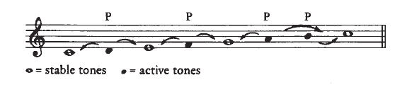
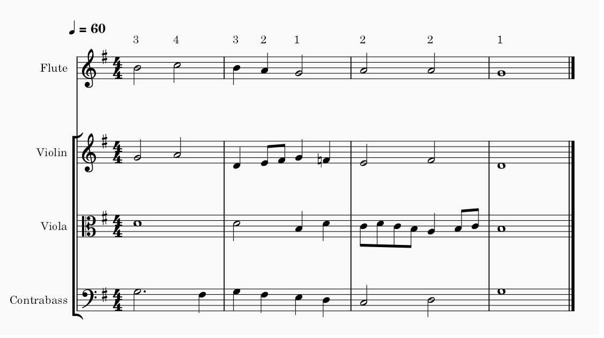
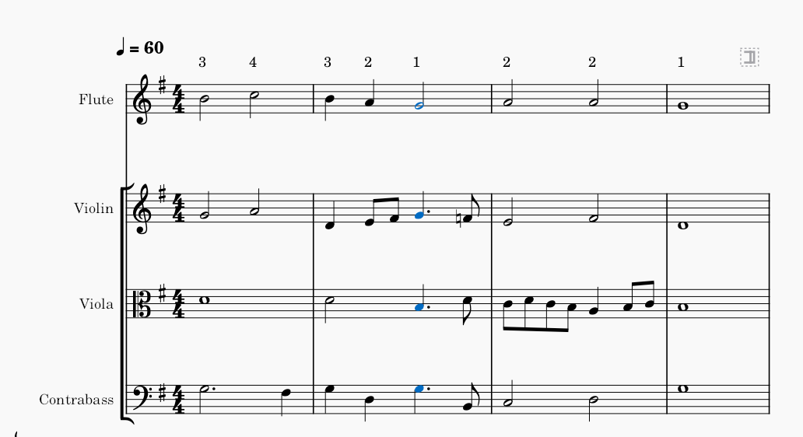
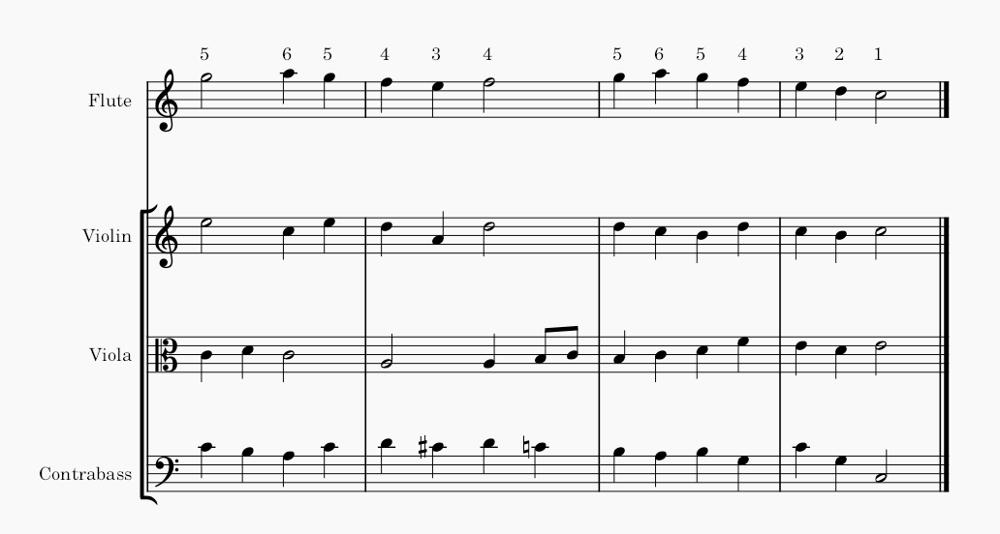
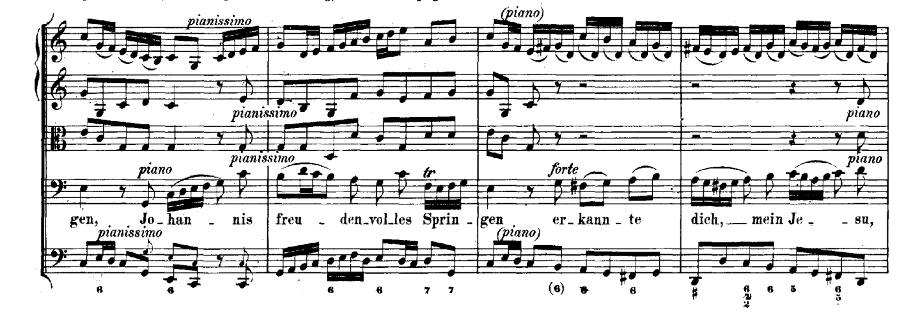

A melodia é o elemento mais importante de uma música. É isto que dá originalidade e é ela que faz a música andar. Uma característica interessante da música é que nós não ouvimos apenas sons estáticos, existe claramente uma noção de desenvolvimento e movimento em que notamos a presença de uma “viagem” e que no final da música chegamos finalmente a um ponto final em que se nota a chegada a um destino. Como é que sons originam isso? Aqui é que começa a importância das escalas.
Como já disse no capítulo 3, as escalas são várias notas que se adequam umas às outras, e que vão originar esta capacidade de movimento. Nesse capítulo disse também que a tónica 1 é a nota principal da escala, é a base, o destino. Então pode-se dizer que todas as outras notas da escala funcionam como tons ativos / intermédios, que tendem a querer mover de volta para 1. Mas digo já que os tons 3 e 5 também têm a característica de serem tons estáveis, mas não tanto como 1. Isto porque o acorde da tónica contém estes tons, mas isso é para ser explicado num capítulo futuro. Então para criar uma melodia temos que usar esta noção de tons estáveis / ativos a nosso favor para criar a sensação de desenvolvimento e movimento.
A imagem anterior mostra o que acabámos de falar, usando a escala de C Major. Os tons 1, 3, 5, são estáveis, todos os outros são ativos. As setas mostram os movimentos de passagem mais comuns para cada um desses tons. Os movimentos de passagem são o tipo mais simples de movimento, em que não existe saltos na melodia, simplesmente anda-se de nota em nota. A maioria das melodias começam num destes tons estáveis, mas o retorno final será sempre 1. Vamos ver exemplos musicais de cada um deles:
Neste simples exemplo existe claramente a noção de um desenvolvimento. Isto acontece por causa do que disse anteriormente. A melodia começa em 1 e vai sempre a passo, sem nenhum salto. Atinge um clímax máximo no tom 5 e logo depois começa a descer até ao 1. Uma característica interessante nesta melodia é quando faz 5, 4, 3 , tudo indicaria que ia para o 2, mas não, ela sobe novamente para o 4 e só aí é que começa a descida até à base, o 1, onde a música termina.
Todas as melodias têm uma componente harmónica. É praticamente impossível construir uma melodia que não tenha uma noção de harmonia embutida de raiz. Por ex: a melodia no exemplo acima podia ser harmonizada de maneiras quase infinitas, aquela maneira que escolhi é uma possibilidade de muitas. É por isso que a base da música está na melodia, porque os acordes e harmonias podem ser mudados de forma quase infinita para uma só melodia e a forma com que harmonizamos é única! Agora vamos ver um exemplo em que a melodia começa no tom 3, um tom bastante comum para iniciar:
A melodia começa em 3, mas logo no segundo compasso termina em 1, significa que a melodia está na chamada base, mas a sonoridade não indica isso. A harmonia que existe aí não faz parte da tónica, então mesmo a melodia estando a soar o 1, não soa final. Já no 4º compasso, a melodia volta a calhar em 1, mas agora já soa final, porque estamos a soar o acorde da tónica. É por isso que a nossa escolha de harmonização transforma completamente o andamento da música.
Se colocasse o acorde da tónica logo no segundo compasso, ia soar que já tinha terminado, pois tanto a harmonização como a harmonia está em 1. Aí ao tentar continuar a música ia soar um bocado estranho, quase como se fosse forçado, mas ainda assim é uma possibilidade que existe, a escolha é nossa. A imagem abaixo representa esta alteração.
Nos capítulos futuros tudo isto vai ser explicado, o importante aqui é recordar que uma melodia pode ser harmonizada de maneiras quase infinitas, só é preciso criatividade e conhecimento. Agora vamos olhar para o último exemplo, em que a melodia começa em 5. Como sempre nestes exemplos, vai terminar em 1, o que assinala o fim da música.
Nestes exemplos, a harmonia que acompanha a melodia principal é bastante envolvida. Se repararmos bem, dá para perceber que afinal não existe só 1 melodia nestes exemplos, cada instrumento está a fazer uma melodia completamente diferente e válida, mas no fim todas elas juntas encaixam na perfeição. Existem 4 melodias em cada 1 destes exemplos! Mas o ouvido só tende a ouvir as notas mais altas como sendo a “principal”, por isso o foco fica muitas vezes no instrumento mais alto e os outros instrumentos são um bocado mais tapados. Normalmente o soprano (som mais alto) é o mais importante, seguido do baixo. Os instrumentos intermédios são muito mais difíceis de ouvir, mas se nos concentrarmos em cada 1 deles ouvindo os exemplos, reparamos que sim, existe uma melodia a acontecer nesses instrumentos, não só no soprano. Esta característica de cada instrumento ter cada 1 deles a sua melodia e depois juntar todas as vozes origina harmonia é uma característica da música clássica, não há instrumentos que estão lá simplesmente para “encher”, cada 1 deles é envolvido e contribui bastante para a atmosfera da música.
Esta partitura é de J.S. Bach (BWV 121) e representa exatamente o que acabei de falar. Os “acordes” que existem é simplesmente várias melodias independentes que ao juntarem formam a harmonia. É por isto que estes compositores foram, são e serão estudados para sempre, por existe uma infinita criatividade e detalhe para ser descoberto de cada vez que se ouve, há sempre detalhes novos para serem descobertos. Esta arte chama-se contraponto.
Isto foi só uma pequena introdução ao mundo das melodias, ainda há muito para descobrir. Ainda só falei de melodias que andavam a passo, mas claro que não é só isso que existe. As melodias podem e devem saltar para originar contraste e movimento, mas ainda assim existem várias regras simples para nos ajudar:
Melodia deve andar sempre a passo, é a forma mais simples.
Pode dar saltos de terceiras ou quartas sem nenhum problema.
Se saltar uma quinta ou mais, é melhor que a melodia desça 1 passo em direção contrária, isto é, se saltar uma quinta para cima, deve descer um passo para baixo e vice versa.
Saltos que originem dissonâncias não podem ser usadas. Uma possível exceção é saltar para cima para a sétima de um acorde, que depois terá que ser resolvido para baixo.
Aqui está um exemplo de uma melodia muito mais interessante do que os exemplos anteriores, porque contém saltos. A linha verde significa salto pequeno, então não há qualquer tipo de problemas. A linha amarela significa que a melodia está a andar a passo que é a maneira mais simples. A linha azul significa que existe um salto bastante acentuado. Como as regras anteriores indicavam, logo após um salto grande é expectável que se ande em passo na direção contrária e é exatamente isso que acontece.
Aqui também se nota em algo que se pode chamar de “linha melódica”, que é um conceito importante. A linha melódica tem que ser interessante e memorável, para fazer isso existem algumas noções:
Tem que existir uma noção de desenvolvimento em que se vai para algum sítio, e no fim volta outra vez para onde começamos.
Tem de existir um clímax, um ponto alto memorável na melodia, esse clímax pode acontecer quase no início, como no meio, até mesmo quase no fim, mas tem que existir e para melhorar o efeito, só pode ocorrer uma vez. No exemplo anterior repara-se que o clímax da melodia ocorre mais ou menos a meio onde existe aquele salto grande, é bastante memorável e interessante. Logo após isso a melodia vai aos poucos retornar para o ponto inicial.
Tem que estar confinada a no máximo 12 notas de verticalidade (por agora). Isto é, não pode descer nem subir demasiado, deve estar confinado num intervalo pequeno. Imagina que é uma voz de uma pessoa, não pode descer nem subir demasiado para fora do limite. Além de ser desconfortável para a pessoa, a melodia ficaria muito desconectada.
Todas as melodias dos exemplos anteriores usam estas regras que defini agora para criar algo memorável e interessante.